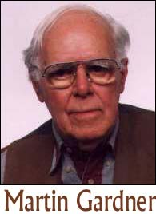

Ese hombre notable
Lo que sigue es un corto ensayo que escribí para un periódico local de Nueva Jersey, a principios de los ‘60. Por tanto contiene anacronismos, y trata de algunos temas en el estado en que se encontraban entonces. Me lo encontré mientras escudriñaba otros documentos, y pensé en compartirlo aquí con ustedes. Tengan en cuenta que la persona de la que escribí cumplirá 90 años este octubre, y aunque es mundialmente famoso, ni siquiera está listado en Quién es quién, increíblemente. He aquí el artículo:
Hay un número limitado de personas que me he propuesto conocer a toda costa. Entre ellos están Peter Ustinov, Margaret Hamilton, Margaret Rutherford y John Archibald Wheeler. Pero a la persona más destacada en esa lista ya la he conocido hace ya mucho tiempo, y he tenido el privilegio de disfrutar su compañía, su erudición y su confianza muchas, muchas veces. Se trata de Martin Gardner.
Este hombre notable vive en Croton-on-Hudson, en su reino de Oz privado en una dirección apropiada: Avenida Euclid, número 10 [*]. Nunca he tenido el valor suficiente para preguntarle a Martin si eligió la casa por su dirección o por su topología, la cual sospecho que de examinarse con cuidado resultaría ser similar a la de una botella de Klein [1]. Sus muchas habitaciones están repletas de columnas de archivos repletos con etiquetas exóticas que dicen, normalmente, “Geometría, plana, sólida, 4D y superior” y “Cubos de color combinatorios, cuadrados mágicos, problemas de lógica y misceláneos”. Hace que a uno la boca se le haga agua y la mente se atonte.
Sus bibliotecas ostentan originales de muchos clásicos del campo de la matemática y del arte de la magia, así como primeras ediciones de todos los libros de “Oz” de L. Frank Baum. Una sección de más de un metro de larga se dedica eteramente a teorías de la “Tierra Hueca” y debe haber varios estantes que contienen sólo los propios libros de Martin, en varios lenguajes y diversas combinaciones. Una fotocopiadora está siempre zumbando, preparada para que cada recorte observado puede ser multicopiado para archivarlo en tantas categorías como se pueda.
Martin archiva números. Si se demuestra que un número es primo, se archiva en “primos”, y se le da su propio archivo para que se puedan anotar otras características. ¿Es suma de cubos? También va en ese archivo. Cualquier peculiaridad se describe y conserva. Recuerdo las ventajas que tuvo este sistema cuando me contrató International Business Machines para preparar una presentación que incluía lógica, soluciones múltiples y nuevas formas de enfocar problemas. IBM estaba preocupada por promocionar sus máquinas comerciales de la serie 370, y le pregunté a Martin sobre ese número en particular.
—¡Ajá! —dijo Martin, inventando también de este modo el título de un libro—, el número 370 es uno de sólo cuatro, además del mismo 1, que es la suma de los cubos de sus propios dígitos. ¿Cuál es el siguiente más alto? —Yo no sabía la respuesta, y me sentí un tonto cuando me lo dijo. Es bastante obvio. —Y si te interesa una conexión con España —continuó—, dalo vuelta. —Lo hice, e IBM estuvo muy complacida con los resultados. Seguramente Martin podría haber seguido interminablemente con hechos sobre el 370, o cualquier otro número que yo hubiera elegido…
Martin Gardner es la persona más organizada que conozco. Sus gustos son simples, pero están a tono con sus intereses. Numerosas obras de Escher (originales, por supuesto) compradas al artista cuando no le interesaba a nadie, adornan las paredes del número 10 de la calle Euclid. Algunos dispositivos mecánicos ingeniosos ocupan varios estantes, y por lo general alguna mesa puede exhibir algún rompecabezas que hay que resolver. Uno de ellos era un grupo de ocho tarjetas con letras que decían “PICTURES”. Cuando se me dijo que podían reordenarse para formar otra palabra inglesa de ocho letras, lo único que se me ocurrió fue “SCRIPTURE”, para la que me faltaba una “R”…
El único adorno personal que le he visto a Martin es un anillo de plata, con la forma de una pequeña cinta de Moebius. Supongo que existen muchos otros adornos de este tipo, pero esa forma en particular parece expresar a este hombre en su totalidad. Es fascinante de forma directa y divertida, tiene facetas y posibilidades insospechadas, es simple y básica; le sienta muy bien, y testifica el buen gusto de Martin.
A las cuatro de la tarde, luego de un largo día de pensar, llegó una llamada de lo alto de la escalera de caracol (que rota en sentido antihorario y da dos vueltas completas) de su esposa Charlotte, la única otra habitante de Oz además del gato, muy correcto, y que uno presume es probablemente un gato de Cheshire. Ambos hijos de la pareja se han ido a vivir solos, volviendo a Emerald City sólo de vez en cuando. Las cuatro de la tarde es “hora del Manhattan”; y tenga o no una fecha de entrega, Martin se aparta de sus labores para relajarse. Es una ceremonia observada y respetada por todos los visitantes, so pena de expulsión. No creo que Martin pudiera beber un Martini. El chiste sería más de lo que él podría aguantar…
Para cerrar estas pocas y breves observaciones, déjenme volver a aquél simposio de IBM en San Francisco. Luego de mi presentación, reconocí el papel de Martin en proporcionar los datos para la producción, y me complació ver que los ingenieros de sistemas presentes le brindaron un prolongado aplauso en ausencia. Pero me sorprendió que, inmediatemente después, me rodeó un gran grupo de ellos que me hizo una pregunta: ¿Martin Gardner era una persona real, o un equipo de trabajo? Les parecía difícil creer que era una sola persona y que proporcionaba tan sorprendente cantidad de material con regularidad.
A estas personas les dije, como les digo a ustedes: sí, existe Martin Gardner, y es tanto regocijante como frustrante, maravilloso y buen amigo para toda mente racional. Es singular, generoso, reflexivo, tímido, valioso y valorado, todo en uno. Y él preferiría que yo no hubiera escrito nada de esto. Pero tenía que hacerlo.
En el siglo veinte, tuvimos a Einstein, el aterrizaje en la luna, el café instantáneo, los biorritmos, los agujeros negros, y el Doctor Mátrix. Y Martin hizo que todo ello valiera la pena mientras estuvo aquí.
Hay soluciones a los acertijos de “370” y “PICTURES”… piensen: comestible, ruido fuerte, siguiente, bravo…
¿Funciona alguna vez?
Un lector anónimo que se encontró con un fraude basado en una horquilla de zahorí nos proporciona este excelente ejemplo de cómo los que se confunden por primera vez con el engaño ideomotor (vea http://www.randi.org/library/dowsing/, en inglés) persistirán en su creencia incluso después de que la realidad se les aclara, y se resistirán a cualquier intento de mostrarles que se han engañado a sí mismos. Es un artículo largo, así que lo presentaré en dos partes. Aquí está la primera parte de “¿Funciona alguna vez?”:
Sobre mediados de enero de este año, supe que un vecino, Darryl, se dedicaba al negocio de cazar tesoros. Se acercó a mí mencionando que su grupo necesitaba un nuevo técnico. Dado que estaba buscando empleo, le hice muchas preguntas sobre la naturaleza de qué era lo que había que hacer, y le presenté mis referencias. Estaba muy interesado y quería que conociera a su socio, Pete, lo cual hice al día siguiente.
Darryl dice tener alguna vaga proximidad con el hampa. Pete tiene sobre sesenta y cinco años de edad, alrededor de seis pies y cuatro pulgadas, y quizá 275 libras de peso. Dice haber servido en la Fuerza Aérea de los Estados Unidos en VietNam, donde su aprato fue derribado . Fue capturado, dice, y después torturado por el VietCong. Los dos han formado una compañía a la cual llaman Cazadores de Tesoros Mundiales LLC. Pete es gerente y Presidente, Darryl es Vicepresidente. Se toman sus títulos y posiciones muy en serio. Pete ha sido cazador de tesoros durante 30 años o más, y los dos se conocen desde hace cinco años.
Me contaron un montón de historia mientras estaba sentado pacientemente en la mesa de la cocina de Pete. Nada demasiado alocado. Sólo muchas experiencias sobre pasados viajes a Méjico (el Viejo y el Nuevo) a cazar tesoros con las fotografías. Después de varias horas, decidieron contratarme. Mi primera asignación foe tomar un borrador de un dibujo manual bidimensional y crear un dibujo tridimensional CAD que se pudiera renderizar y publicar en un website. El borrador era un producto que Pete había “desarrollado” llamado El Localizador. Pete decía tener algún tipo de estudios o entrenamiento en electrónica o ingeniería eléctrica. Esto nunca estuvo claro para mí. Le llamaba a su aparato Localizador de Largo Alcance, y decía que podía localizar grandes depósitos subterráneos de oro a millas de distancia, y que estaba sintonizado para encontrar sólo oro procesado (fundido). La electrónica estaba puesta con una frecuencia de 5.000 hertzios. Era a esta frecuencia concreta, decía, que el Localizador recogería la señal del oro procesado a la cual llamaba EMI o Aura de Intensidad Electromagnética. Esperaba comercializar y vender este localizador a través de una compañía detectora de metales con el nombre de KELLYCO. Preveía que sus ingresos serían de alrededor de 11 millones de dólares que serían suficientes para financiar sus futuras actividades de caza de tesoros.
Durante pocas semanas siguientes tuve numerosas discusiones con ellos. Uno o los dos me llamaban casi diariamente. Nunca estuve realmente de acuerdo en ser parte de su equipo, pero seguí el juego y asentí con la cabeza. Sólo quería que me pagaran por hacer mi trabajo, así que me guardé mis dudas para mis adentros.
Durante este período, Pete me entregaba ocasionalmente el dinero en un sobre, lo cual para mí era suficiente. Cuando hube completado el proyecto me llamó y me dijo que había hecho un trabajo maravilloso. Después las llamadas diarias pararon. Por alguna razón retenía los últimos 500 dólares que me debía. Finalmente me llamó y me dijo que le gustaría que yo “probara” su prototipo de localizador de oro, confirmara que funcionaba según lo previsto, y escribiera un análisis detallado (es decir, la física que hay por debajo) de cómo y por qué este aparato funcionaba, y finalmente añadiera mi firma de ingeniero profesional como conformidad. Eso quedaba fuera de los límites del alcance del proyecto original, pero como estaba reteniendo mi dinero como rehén, estuve de acuerdo en la prueba de campo, en las afueras de un pequeño pueblo de California. El sitio tiene algún significado histórico para los Mormones (no sé exactamente qué) y hay petroglifos por toda la zona.
Un lunes por la mañana en Febrero, me atrajeron al lugar de pruebas con la promesa de pagarme todo. También querían que conociera a algunos de sus otros socios. Al principio estábamos sólo Pete, Darryl y yo, esperando a otros tres miembros. Los subimos y nos dirigimos al lugar de pruebas. Ésta fue mi primera experiencia con el Localizador , un tosco prototipo. Pete lo montó y me lo dio para que lo usara. Arranqué el aparato. Una lámpara roja se encendió y el panel de control emitió un rumor débil y agudo. Se da la circunstancia de interés que semanas antes Pete me había enviado por fax el esquema electrónico del panel de controles. No pretendo dármelas de ingeniero eléctrico o siquiera un técnico electrónico, pero puedo leer un esquema. El aparato emite una señal de radio de 5.000 hertzios de energía extremadamente baja. Así que aquí estoy en el medio de ningún sitio en una fría y ventosa meseta con este aparato en mi mano, y como puede esperar, ¡El aparato no hacía absolutamente nada! Ellos estaban muy desilusionados, pero decidieron que eran las condiciones de frío y viento las que estaban afectando adversamente al EMI y posiblemente a la electrónica de la caja de mandos. Así que nos cambiamos de sitio para intentarlo “un poco más cerca del oro” ¡donde el EMIA era presumiblemente mucho más potente!
Por el camino paramos para mirar los petroglifos. Ahí es donde obtuve una muestra de la personalidad de Pete. Dijo tener cientos de libros sobre antiguas escrituras, y procedió a contarnos todo acerca de los significados ocultos de los antiguos dibujos que estábamos mirando. Largó sobre alienígenas y OVNIS Lo encontré muy entretenido. Volvimos a los vehículos y seguimos por una sucia carretera otra milla. Nos bajamos en la cima de un cañón. Me hicieron de probar el Localizador otra vez. ¿Lo adivinan? Todavía no funcionaba. La excusa esta vez fue que necesitaba más práctica para pillarle el manejo.
Pete dijo que necesitábamos acercarnos más al oro. Bajamos a pie hacia el cañón y subimos por el otro lado. Yo estaba caminado sobre seis pulgadas de nieve y empezaba a sentir miedo. (Quizá había visto demasiados episodios de “Los Soprano”). Al fin estaba haciendo algo de ejercicio. Paramos a medio camino en la ruta hacia arriba por el otro lado del cañón y Pete sacó una larga vara de acero con otra caja de control electrónica pegada a una “antena”. Puso su dispositivo en el suelo. Aquello, dijo, era un amplificador EMIA. Como yo ya sabía, la circuitería de la caja de control no era más que un set de radio de cristal sintonizado a 5 kilohertzios. Una vez que tuvimos el sitio real, me pidieron usar el Localizador otra vez. Una vez más, no hizo absolutamente nada y yo estaba pensando lo dignos de pena que eran estos tipos ¡y lo estúpido que era yo! En ese momento uno de los hombres nuevos mencionó que yo no tenía probablemente la “energía” correcta para que el localizador funcionara correctamente. Se refería a la “energía” en mi cuerpo, supongo. En este punto Pete se mostró incrédulo porque el dispositivo no funcionaba para mí, así que lo cogió él. Todo el mundo se reunió alrededor para observar al maestro. El brazo sobre el Localizador estaba oscilando como loco cada vez que caminaba sobre el sitio exacto. Todos menos yo estaban atónitos! Estábamos claramente situados sobre un enorme depósito de oro.
Mientras los otros estaban mirando el brazo del Localizador con un alambre de oro en su punta, yo miraba la mano de Pete. Estaba moviendo su mano para obtener el efecto deseado ¿Era consciente de ello? No estoy seguro. Le pregunté la profundidad del oro y si podíamos empezar ya a cavar. Pete dijo que estaba a unos 80 pies ajo capas de basalto, además de que estábamos sobre suelo federal. La teoría de Pete era que el oro fue abandonado por los españoles unos quinientos años atrás. Si embargo, el oro estaba bajo el basalto, que era el producto de actividad volcánica ocurrida hace millones de años. ¿Cómo entonces fue el oro a parar debajo del basalto? ¡Que me golpeen! No dije nada porque estaba empezando a pensar que esos tipos podían ser peligrosos. Estuvimos en el sitio durante un tiempo dando vueltas con el Localizador. Aparentemente Pete era el único entre nosotros con las aptitudes suficientes para usarlo correctamente. Otro del equipo había estado deambulando por el área mientras estábamos ocupados localizando oro. Nos informó de que había “dos guardianes” observándonos. Eso llamó mi atención. Pensé que quizá algunos agentes de la Dirección de tierras y Minas estaban en el área. Me dijeron que esos guardianes eran esencialmente fantasmas que vigilan el oro, y que si tu “energía” era buena, te dejarían llevarte el oro.
Cuando nos dirigíamos a casa le pregunté a Darryl si habían probado alguna vez el Localizador con una barra o una moneda de oro. La respuesta conveniente ue que sólo trabajaba con grandes cantidades de oro. Además, Darryl me habló de la próxima excavación que estaban planeando hacer en Shiprock, Nuevo México. Pete “sabía” que el oro estaba ahí. Sólo tenían que desenterrarlo. Darryl mencionó que tenían también un sitio para una potencial excavación en el viejo México. Aparentemente hay una cueva allí cubierta por un gran pedrusco. Darryl dijo que no le sorprendería si también encontraran una nave alienígena en esa cueva .¡Toma ya!
Fin de la primera parte. La segunda parte seguirá la próxima semana.
Reclame un reembolso
“Charlie de Dayton” comentó, en relación con la discusión del recientemente descubierto “planeta” Sedna, y cómo afectará a los astrólogos, citándome primero:
“… ahora podemos esperar que los astrólogos examinen cada uno de los miles de millones de trozos de hielo y roca que vagan […] de modo que el fracaso de la astrología pueda ser explicado simplemente por la complejidad…”
Me recuerda las palabras del Mal Astrónomo [Phil Plait] en relación con la Concordancia Armónica de hace algunos años, que requería la presencia de Quirón para hacer que la magia funcionara (no recuerdo si Quirón pertenece al clan de Kuiper o al de Oort… ¿produce alguna diferencia? Las mentes curiosas quieren saberlo). Aparentemente se lanzó allí a Quirón sólo para que la imagen se viera linda…
Así pues, ¿qué efecto causa Sedna en todos los milenios de horóscopos trazados sin tener en cuenta su influencia? ¿En cuanto tiempo prescribe el reclamo de reembolsos o la acción por daños monetarios debido al karma predicho de forma insuficiente? Me pregunto si un miembro de las grandes masas intentará en verdad obtener algún alivio por este medio…
Suenas como un abogado hambriento, Charlie… A propósito, ahora se considera que Quirón es un cometa porque se detectó una débil y borrosa cola, pero todavía calificaría como un planeta menor; las denominaciones mismas son bastante borrosas. No confunda a Quirón con Caronte [†], la diminuta luna del diminuto Plutón. Este último recibió su nombre del aparentemente mítico botero que transporta las almas griegas a través del río Estigia. Sí, es todo muy complicado.
Ya que hablamos del tema, el lector británico Simon Nicholson vuelve a traer a colación a un astrólogo muy rico y adorado:
En relación a la charla sobre Sedna en [un comentario reciente]: me encontré con una carta interesante en el periódico británico “Daily Mirror” hace unos pocos días. Un lector había escrito al astrólogo del periódico, Jonathan Cainer, señalando la interesante cuestión de que (dejando de lado el fascinante debate sobre si Sedna es realmente un planeta) en verdad no es un planeta nuevo; es un planeta que acaba de descubrirse. Ciertamente su influencia, con la que se entusiasman Cainer y otros astrólogos, debía haber estado allí todo el tiempo…
Cainer no se dignó responder él mismo, sino que citó una carta de otro lector, que explicaba que sólo cuando uno puede ver un planeta su influencia empieza a notarse.
¡Entonces eso lo resuelve!
Simon, te voy a decepcionar. Si la definición de “ver” significa “percibir con el ojo desnudo”, Sedna nunca entrará en la categoría (ni deberían hacerlo Neptuno o Plutón) ¡ya que no son visibles de esa manera! Aunque Neptuno es enorme, está muy alejado, y tanto Plutón como Sedna son porciones de materia relativamente pequeñas que están aún más lejos; los tres objetos sólo son visibles con telescopios potentes. Y, debe hacerse destacarse, se cree que Sedna se acerca sólo cada 10.500 años, y en su punto más cercano está a 15.000.000.000 de kilómetros de la Tierra. Yo diría que no es mucha influencia sobre nosotros, pero los astrólogos se aferrarán a cada pizca de insensatez que puedan generar, como sabemos.
Esos eran los días
John Murr Rhame, Jr., de Charlotte, NC, me escribió:
Su nombre apareció en “How Things Work” (“Cómo funcionan las cosas”), una lista de correo de enseñanza de ciencia y tecnología a la que estoy suscrito. Pensé que podría interesarle la historia que cuento más abajo. El incidente que describo ocurrió más o menos en 1979. La Universidad de Sumter en Carolina del Sur contrató las actuaciones de usted para el Pequeño Teatro de Sumter.
Luego describió el incidente:
Randi es un sujeto muy simpático. Ha refutado muchas alegaciones de los psíquicos. También ha ayudado a los científicos a detectar trucos que simulaban ser capacidades paranormales. Hace años, era un muy buen artista del escape y “mago de primer plano”… Hace unos veinte años, hizo una serie de tres funciones en un teatrito donde yo trabajaba como director técnico. Un co-conspirador y yo lo atamos a una silla durante su acto. Lo retuvimos durante casi una hora. La noche anterior, se había soltado en cerca de un minuto. Nos pareció que podíamos hacer un mejor trabajo.
Randi comenta: Murr había evaluado las posibilidades. El truco que hice era así: yo le daba a dos voluntarios de la audiencia 30 metros de soga, presentándola en sendos rollos de 15 metros. La ropa siempre la proporcionaba el teatro, aunque según mis especificaciones; Murr puede no haberlo sabido. Yo me sentaba en una silla sencilla de madera (sin brazos) y los desafiaba a que me ataran de modo que no pudiera liberarme. He aquí la conclusión a la que llegaron Murr y su colega:
Demasiada soga y nudos malos facilitan un escape rápido. Parte de la ventaja de los artistas del escape es que ellos proporcionan la soga, en este caso, dos rollos de soga de algodón de 15 metros y 1 centímetro de diámetro. Con tanta soga para trabajar, la mayoría de la gente lo envuelven como si fuera una momoa. No se puede ceñir los rollos muy apretados, o no podrá respirar. El escapista además hace pequeños trucos como expandir su pecho y mantener sus extremidades lejos de la silla a la que se lo ata. Una madeja enorme de soga enrollada flojamente hace bastante fácil aflojar algo.
Esto es bastante correcto. Pero la picardía de ellos fue mucho más allá:
Pusimos vueltas de soga bifurcadas en sus tobillos y muñecas, trabamos las vueltas con un par de vueltas más por encima, y luego atamos éstas a la silla. Añadimos un cinturón para la silla, luego enrollamos los, más o menos, veinticinco metros restantes y los pusimos prolijamente en su falda. Pudimos haber hecho un trabajo mejor con varios trozos de soga más cortos, pero nos las arreglamos con los que teníamos, porque no queríamos cortar con un cuchillo las herramientas del fulano.
¡Bien pensado! Estos señores realmente sabían lo que hacían. El lector Dave Typinski comenta, sobre este tema:
Me asombra que la gente pueda escapar de tal clase de ataduras. Si hubiera sido yo, mi cuerpo desecado todavía estaría allí. ¿Vale considerar escape el que la soga de algodón se pudra?
No, Dave. Va contra las reglas. Otro corresponsal escribe:
E incluso si [los artistas del escape] tienen esposas, puede contarse conque estén trucadas o que el artista del escape tenga una ganzúa escondida.
Bien, nunca he usado mis propias esposas, ya que obviamente tendría una copia de la llave en algún lugar útil, o podrían haber sido trucadas, y no sería muy impresionante. Siempre hago que los policías locales provean las manillas, como en el escape de la cárcel que hice en Sumter como parte de un acuerdo posterior, descrito más adelante.
Siguiendo con el relato de Murr:
Me impresionó mucho el escape de Randi. Tenía una pequeña ventaja con el tipo de soga que presentó. También se escapó de forma legítima de los nudos atados cuidadosamente por gente que sabe manejar una soga. Concedo que la mayoría de la gente que maneja sogas no ata gente con frecuencia. Aún así, hicimos un bueno trabajo con él.
También es un gran artista del entretenimiento. Como dije, lo retuvimos cerca de una hora. Aunque estaba completamente inmóvil, su charla entretuvo completamente a un par de cientos de personas durante unos 50 minutos mientras se liberaba con calma. El espectáculo se hizo un poco largo esa noche pero nadie se quejó, incluido Randi.
Era y aún es un maestro en lo que hace.
La mayor parte de los actos de escapismo implican utilería preparada o dispositivos ocultos. Si a un mago se lo encierra en un baúl que trajo consigo, es seguro que ha modificado el baúl para su beneficio. Incluso así, los mejores escapistas son muy bueno simprovisando. Parte de la rutina de publicidad de Randi era ir a la cárcel local y pedir que lo encarcelaran. Entonces se sometería a los procedimientos de encarcelamiento normales y normalmente saldría en unos pocos minutos utilizando sólo su habilidad y los materiales encontrados en la celda. Los buenos artistas del escape se toman su oficio muy en serio y son muy buenos en lo que hacen.

Al año siguiente, volvieron a contratarme en Sumter. Esto era para ayudar a una entidad benéfica local, y decidí hacer un escape carcelario para que los medios cubrieran un poco el evento. Recuerdo que el comisario era un caballero encantador llamado I. Byrd Parnell, quien no sólo proporcionó las esposas que usé para mi presentación en el escenario, sino que ofreció encerrarme en la carcel local para crear cierto interés en el espectáculo subsiguiente. Por supuesto los medios locales se interesaron mucho en tal evento, y fotografiaron cada aspecto del mismo.
El comisario Parnell exhibió un par de grilletes para las piernas para añadir a los dos pares de esposas que ya tenía disponibles. Siguiendo el procedimiento habitual, se me desvistió, registró, se me permitió volver a vestirme mínimamente (para los fotógrafos) y luego me ajustaron tres pares de esposas y se me encerró en la celda. Mientras esto sucedía entré en conversión con el comisario y elogié la fedora rojo oscuro que estaba usando. El comisario dijo con generosidad que si me las arreglaba para salir de su prisión, con gusto me daría el sombrero. Él y los medios dejaron la escena y me puse a trabajar en mi liberación.
Las esposas y grilletes eran las normales de Smith & Wesson, al igual que la cerradura de la celda (un modelo Sargent & Greenleaf). Este último no sólo hace “clic” cuando cierra, hace falta una vuelta adicional de la llave para poner un perno cuadrado en su lugar. No recuerdo cuánto tiempo me llevó escaparme, pero probablemente fueron sólo unos 20 minutos; siempre no intento no perder a los medios que esperan afuera. Supongo que el comisario Parnell estaba bastante más sorprendido que los periodistas cuando salí de su escenario de máxima seguridad sin los grilletes, pero de forma totalmente caballerosa anunció que me entregaría su sombrero, en el escenario del espectáculo, esa misma noche. Fiel a su promesa, hizo exactamente eso. (Lamento decirles que aunque todavía conservo el sombrero, era demasiado pequeño para mi gran cabeza.)

Si la memoria no me falla, el nombre del alcalde en ese momento era Bubba McElveen. No faltan nombres coloridos ni sombreros en Sumter. También recuerdo que Parnell criaba sabuesos mapacheros, como actividad adicional. En definitiva, Sumter y yo nos llevamos muy bien, recaudamos algún dinero para caridad, y los medios nos trataron muy bien.
John, gracias por recordarme este evento.
Más Bullshit!
El lector Jeff VanCuren sugiere que yo debería mencionar que la serie “Bullshit!” de Penn y Teller ha sido lanzada en DVD. La edición de la primera temporada, con 14 episodios y muchas características adicioales, incluyendo una entrevista con moi, ya está a la venta, y se vende como pan caliente, según dice el dicho. Destruye el disparate como sólo Penn y Teller pueden hacerlo. Y acaban de volver a la televisión con la segunda temporada, que actualmente está en pantalla…
La prueba perfecta
Al lector Aaron “Nunca apoya a los roñosos” Froberg se le ha ocurrido una prueba fantástica que nuestras autoridades federales pueden querer utilizar, en lugar del polígrafo o del “analizador computadorizado de tensión vocal” tan popular en este momento. ¡El método podría identificar a los ciudadanos que no toman decisiones “basadas en la fe”! Dice Aaron:
Luego de leer los muchos ejemplos de los aspirantes pasados de la JREF en su archivo de comentarios llegué a darme cuenta de que ganar el premio del millón de dólares sería mucho más fácil si los individuos se convirtieran simplemente al cristianismo. He aquí la razón:
En Marcos 16.15-18:
Y [Jesús] les dijo: “Vayan por todo el mundo y anuncien a todos este mensaje de salvacíon. El que crea y sea bautizado, será salvo; pero el que no crea, será condenado. Y estas señales acompañarán a los que creen: en mi nombre expulsarán demonios; hablarán nuevas lenguas; tomarán en las manos serpientes; y si beben algo venenoso, no les hará daño; además, pondrán las manos sobre los enfermos, y éstos sanarán”.
Los Signos prometidos a todos y cada uno de los creyentes son: 1) Pueden ahuyentar demonios; 2) Pueden hablar idiomas nuevos que jamás estudiaron; 3) Pueden manejar con impunidad cualquier serpiente mortal; 4) Pueden beber cualquier veneno mortal y no sufrir daño alguno; 5) Pueden curar a los enfermos simplemente imponiéndoles las manos. Guau, ojalá hubiera sabido la parte de hablar idiomas nuevos cuando sufría con el castellano en el colegio.
Gracias por darme pruebas de que hay gente racional y lógica que todavía vive y respira realidad.
¡Las observaciones de Aaron proporcionan una prueba infalible de si alguien es de verdad un verdadero cristiano! Una inyección rápida de estricnina debería determinar la respuesta. O podemos tomar un balde lleno de demonios y ver cómo el ungido los espanta. ¿Una cobra en los pantalones? ¿Quizá a un caso grave de paspadura por pañal podría ordenársele que se fuera? Negar que esta prueba funcionaría sería negar la verdad de la Biblia, amigos.
¿Estoy hablando en serio? Oh, sí. Esta es una posición filosófica y práctica que puede ser comprobada fácil, rápida y definitivamente. Hagámoslo.
(En relación con la prueba de probar estricnina, vea más detalles en http://www.randi.org/jr/040502.html [en inglés]).
En realidad no se aplica
Un lector nos comenta en relación con la cláusula de las constituciones estatales referidas a la exigencia de creer en Dios para acceder a un cargo público, que además de Texas otros seis estados (Carolina del Norte, Carolina del Sur, Massachussets, Maryland, Pennsylvania y Tennessee) tienen lenguaje similar incorporado en sus Cartas de Derechos, sus Declaraciones de Derechos, o en el cuerpo de sus constituciones. Dice:
No es cierto en un sentido legal… pregúntenle a un abogado. En 1961, la Suprema Corte de los Estados Unidos falló en el caso Torcaso c/ Watkins que el estado de Maryland no podía exigir un “juramento probatorio” (uno que afirme la creencia en Dios) para acceder a un cargo púbilco. Por extensión, esto invalidó tales provisiones en todas las constituciones del Estado. Tales provisiones puede parecer que existen aún en las constituciones del Estado, pero no pueden hacerse cumplir, así que es insanablemente nula y no se considera parte del cuerpo de la ley. Una decisión de la corte de que una ley es “inconstitucional” no “remueve” la ley; sólo la legislatura puede hacer eso. Pero hace ilegal hacer cumplir la ley. En los Estados Uidos, al menos, el cuerpo de la ley incluye mucho más que los estatutos escritos, especialmente todas las decisiones de la corte que sean aplicables.
Puede no estar en la ley, y puede que sea imposible hacerlo cumplir, pero en verdad no puedo imaginar que en los Estados Unidos se vote a nadie que forme parte de una lista “Sin Dioses”.
Otra epifanía
El lector John Banghart le acredita a nuestro foro una revelación:
Leer el comentario de hoy me recordó mi propia anécdota, la que pensé que podría compartir. Es especialmente relevante para la JREF, ya que fue alguien del foro de la JREF quien me dio mi “epifanía”.
Tengo un recuerdo muy claro de ver OVNIs cuando yo era adolescente. Estaba examinando la ventana trasera de mi habitación algún tiempo luego de oscurecido, cuando vi cinco luces anaranjadas borrosas, volando las unas en torno a las otras en la distancia, a unos 30 grados sobre el horizonte. Ahora bien, había un gran depósito de camiones en esa dirección que tenía muchas luces anaranjadas, así que lo primero que pensé que fue la luz se reflejaba en las alas de los murciélagos, ya que volaban erráticamente mientras permanecían juntos. Luego de unos 30 segundos, los cinco objetos se ubicaron rápidamente en una formación en V (como los gansos) y volaron detrás de un árbol, donde los perdí de vista.
Durante quince años fui incapaz de reconciliar los dos patrones de vuelo muy distintos que exhibían los objetos. Hace varios meses, me crucé con el sitio de usted y decidí publicar mi experiencia en los foros, esperando que alguien pudiera echar alguna luz. En minutos, otro miembro del foro informó una experiencia similar, y cuando investigó, resultó que alguien había estado volando cometas por la noche. Ni que decir tiene que eso me hizo reaccionar. Tenía perfecto sentido, y coincidía con mi conocimiento de los patrones de vuelo que había presenciado en las cometas durante el día. Eso, combinado con el conocimiento de que la luz naranja fácilmente podría reflejarse desde las superficies de las cometas, me dio la respuesta que había estado buscando.
El mensaje de esta historia es que a veces todos somos víctimas de nuestra limitada experiencia. La posibilidad nunca se me había ocurrido, ya que nunca había pensado que alguien remontara cometas por la noche, y me dejó perplejo. Compartiendo lo que me sucedió, amplié la base de experiencia con la cual podía verificar mi historia, y se encontró una explicación razonable.
Por supuesto, ahora no puedo decirle a la gente que vi un OVNI, pero así es la vida.
Sí, es difícil…
John Edward está temblando…
El lector Vincent Golden de Worcester, Massachusetts, adivina con bastante éxito:
Pensé que le comentaría una experiencia que tuve hace unos pocos años cuando era un estudiante graduado en bibliotecología y ciencia de la información. En un encuentro informal, un grupo de nosotros hablábamos sobre lo paranormal y una de mis compañeras habló de una vez en la que estaba pensando en una amiga con la que no había hablado en unos pocos años, cuando sonó el teléfono, y era ella. Le pregunté la fecha y la sabía con exactitud. Dado que no era un feriado y la sabía exactamente, decidí correr un riesgo. La miré y le dije que estaba recibiendo una sensación: la fecha era el cumpleaños de su amiga. Acerté exactamente. Luego di la explicación racional de que, ya que la fecha no era un feriado, una buena suposición era que se trataba de un cumpleaños. Ya que ella no había mencionado su cumpleaños, tenía una probabilidad del 50% de adivinar. Resultó que solían celebrar sus cumpleaños juntas, y luego ella se mudó; solían llamarse por teléfono. Por alguna razón, dejaron de hacerlo. Señalé que había muchos cumpleaños en los que ella podría haber pensado en su amiga y ella no llamó… y viceversa. La explicación racional era mucho más razonable que la psíquica. El remate del asunto fue que a ella le molestó que le arruiné el suceso. Supongo que es apenas una muestra ínfima de cuán ingrato puede ser el trabajo de usted.
Sí, repito, es difícil…
La FDA da un paso tímido hacia el siglo XXI
¡Aleluya! ¡La Administración de Alimentos y Drogas de los Estados Unidos (USFDA) acaba de anunciar que no necesita evidencia efectiva de daño humano antes de que pueda tomar medidas para detener las ventas de un suplemento alimenticio! Dicen que los datos de animales, estudios en tubos de ensayo, incluso productos similares, pueden bastar.
Sin embargo, sugieren que el Congreso debería exigir a los fabricantes que informen a los clientes los efectos secundarios. Me suena razonable. La industria de suplementos dietarios, que mueve 19.000 millones de dólares, y vende productos que van desde vitaminas comunes a hormonas y estimulantes controversiales, está, para decirlo con mucha amabilidad, apenas regulada. Una ley de 1994 adoptada por la industria dice que, a diferencia de la mayoría de los medicametos, la mayoría de los suplementos vendidos hoy nunca tienen que probar que son seguros, mucho menos probar que traen algún beneficio para la salud.
La oficina de suplementos dietarios de la FDA, con un presupuesto de 10 millones de dólares y un personal de 25, ahora tiene que encontrar bastante evidencia para retirar del mercado los productos riesgosos. La hierba efedra, una frecuente causa de ataques cardíacos y apoplejías, está en la mira para ser el primer suplemento prohibido formalmente. Como se esperaba, los negocios de alimetos saludables están vendiendo cada brizna de esta sustancia a los compradores frenéticos. Se han relacionado unas 155 muertes al estimulante herbáceo.
Quizá mi experiencia pasada tenga la culpa de mis fuertes dudas de que esto servirá de mucho, pero estoy dispuesto a que me lo demuestren. Estoy igual de preocupado con el hecho de que la mayor parte de estos productos nunca han demostrado hacer nada de lo que alegan, sean seguros o no, librándose del exame con la frase: “Estas afirmaciones no han sido validadas por la FDA. Estos productos no son para diagnosticar, tratar, curar o impedir enfermedad alguna”. La pregunta se presenta sola de inmediato: ¿Entonces, para qué son, además de para quitarles dinero a los ingenuos?
¡Se encontró la evidencia de Meier!
El lector Tony Bradwhaw nos dice algo que podríamos haber sospechado:
Noté que mencionaba la página en blanco de Billy Meier, que se supone contiene la “evidencia”, y decidí ver si podía encontrarla. Y ¿adivine qué? ¡Lo logré! Por supuesto, hay que pagar por ella, y está llena de “lenguaje técnico”, no es que la haya comprado y leído, pero se “advierte” sobre ello. Como sea, puede encontrarse este sobprendente descubrimiento que todos en el mundo científico están ocultando, aquí: http://www.steelmarkonline.com/purchase_downloads.htm
Por supuesto, por qué tienen que cobrar para difundir la información, no lo sé, especialmente ya que vale un millón, ¿verdad? ¡Ey! ¿Qué tal si copio una copia y la presento yo mismo? ¿O también tengo que conseguir un pedazo de metal falso? Maldición… no puedo decir que no lo intenté.
Noticias realmente malas por medio de Sylvia
He aquí un extracto de una lecura que Silvia Browne dio en diciembre pasado en Larry King Live, en CNN. Ella hablaba con una mujer que llamaba desde Japón, que dijo que quería resolver algunos asuntos con su madre. Silvia asumió erróneamente que Mamá había muerto:
BROWNE: Sí, pero no sé si podría haber resuelto algún tema pendiente con su madre, porque ella era tan difícil… de tratar, y no digo eso por ser cruel. Así que, ya ve, lo, lo que tiene que darse cuenta es que cuando alguien cruza al otro lado, todo está bien.
ESPECTADORA: Pero ella est… ¿definitivamente la ve del otro lado?
BROWNE: Sí, un poco. [Rápido] Si… ella es pequeña. [‡]
ESPECTADORA: ¿Sí? Bueno… la última vez que hablé con ella, estaba viva.
BROWNE: Sí, pero veo, no… ahora no está viva.
ESPECTADORA: Está muerta.
BROWNE: Sí.
ESPECTADORA: Me está diciendo que mi madre ha muerto.
BROWNE: Sí.
ESPECTADORA: ¿Está segura de eso?
BROWNE: Totalmente.
ESPECTADORA: Bueno, voy a tener que volver con usted luego de haberla llamado.
BROWNE: Muy bien.
ESPECTADORA: Gracias.
¿Qué puedo agregar a esto, amigos? Bien, podría preguntarme si el anfitrión, Larry King, se preocupó por contactar más tarde a la televidente, para saber lo que le pasó a su madre. Supongo que no, porque eso podría revelar otra mentira perfectamente buena de la señora Browne.
Una joven escéptica se suma

Cerraremos esta semana con un relato corto escrito por Aynsley Mervine como ensayo escolar. Se suponía que el tema del relato eran los sueños, y este relato refleja sus creencias escépticas. Como no soy su profesor, y aunque tengo fuertes tendencias a corregir, lo pondré aquí tal como lo recibi…
Lo veo todo
Madra no usaba cartas o bolas de cristal para observar el futuro, en vez de ello se basaba en sus sueños. Cuando adivinaba la suerte caía en trance, un estado similar al sueño, y creía que podía decir el futuro de una persona. Una vez le dijo a Jibari, el pastor de cabras, que dejara de pastorear cabras porque iban a pisotearlo, y él vendió su rebaño y se convirtió en criador de pollos. No le gustaban los pollos, pero no lo pisotearían hasta morir.
—Sí —pensó Madra—, he hecho otra buena acción por este mundo, salvé la vida de Jibari.
La gente cambiaba todas sus vidas, “para adaptarlas mejor a lo que yo digo”, decía Madra.
Una noche en la que Madra volvió de su difícil trabajo, se tendió y flotó en un trance profundo. Lo único distinto esta vez era que la visión era sobre ella. En la visión caminaba en la acera resquebrajada que usaba todos los días para ir a trabajar. De pronto vio con el rabillo del ojo un enorme autobús verde dirigiéndose hacia ella a gran velocidad. Despertó de pronto con el corazón acelerado. Sabía que iba a morir, porque podía verlo todo.
Madra decidió que nunca volvería a ir a trabajar, de ese modo nunca la mataría el autobus. El único problema era que como no iba a trabajar, no le pagaban. Como no le pagaban, no podía comprar nada. Luego de tres semanas de exilio en su hogar, Madra destrozó su cocina buscando algo que comer. Madra decidió que si el gran Espíritu decidió que la gran Madra iba a morir, ella aceptaría su destino. Así que fue a trabajar.
Madra inició su día como cualquier otro. Extrañamente, finalizó del mismo modo. Luego de un año de esperar ser atropellada por un autobús, Madra empezó a pensar en su sueño.
—Quizá no puedo ver el futuro —pensó Madra entre sí—, y además ¡nunca he visto un autobús verde! ¿Le he estado mintiendo a esta gente? ¿Me he estado mintiendo a mí misma? ¡Es tiempo de dejar de vivir en mi sueño y despertar!
Seis años más tarde Madra se había mudado a la ciudad de Nueva York y abrió un bufete de abogado. Desafortunadamente para Jibara, todavía cría pollos, aunque descubrió que es alérgico a los pollos.
Gracias, Aynsley. Madra aprendió algo, parece. Ojalá todos aprendamos del mismo modo…

Notes
Comentarios
Comments powered by Disqus